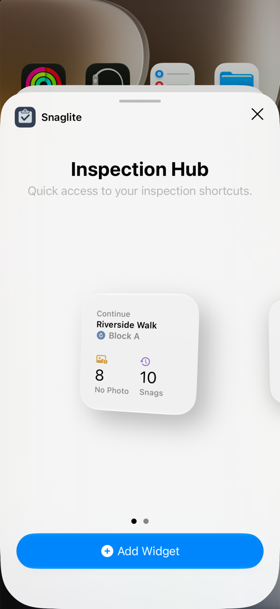

Siri, Shortcuts and Widgets NEW IN 1.1
Ask Siri about your snags, jump back into an inspection from the Home Screen, and automate report filing with the Shortcuts app.
Home Screen widget
The Inspection Hub widget comes in small and medium sizes. It shows:
- Continue – the site and unit you were last working in. Tap to go straight back to it.
- No Photo – how many snags have no photos yet. Tap to open the Missing Photos list.
- Snags – your snag total. Tap to open Recent Snags.
To add it, press and hold an empty area of the Home Screen, tap Edit → Add Widget, search for Snaglite and choose a size.

Asking Siri
These phrases work straight away, with no setup:
| Say | What happens |
|---|---|
| “Continue my inspection in Snaglite” | Opens the unit you were last working in. |
| “Count snags in Snaglite” | Tells you the total, open and closed counts. You can also say “Count open snags” or “Count closed snags”. |
| “Show snags in Snaglite” | Asks which location, then opens its snags. |
| “Find snags in Snaglite” | Finds snags matching a site, unit, location, status, assignee or text. |
| “Add a site note in Snaglite” | Asks which site and what to add, then adds the note to the end of that site’s notes. |
Siri asks for anything it needs, such as which site or unit. Snaglite needs your device to be unlocked to show inspection details. Archived sites that have had their full-sized photos removed are read-only, so notes cannot be added to them.
Shortcuts actions
Snaglite adds these actions to the Shortcuts app:
- Create Inspection Reports – creates PDF reports you can pass to Mail, Save File or other actions
- Show Snag Results – opens a filtered list of snags in Snaglite
- Count Snags – returns a count you can use in other actions
- Continue Inspection, Show Snags in a Location and Append Site Note
Create Inspection Reports
Choose a Report Scope:
| Scope | Reports on |
|---|---|
| Selected Unit | One unit you choose when you set up the shortcut. |
| Last Inspected Unit | The unit you opened most recently. |
| Units Visited Today | Every unit you opened on this device today – one PDF per unit. |
| Filtered Snags | Snags matching a site, location name, assignee, status or text, grouped into one PDF per unit. |
You can also set the report style (Standard, Back Snag or Custom), which snags to include (All, Open or Closed), grouping, assignees, General Notes and weather. Your saved company, inspector and logo are used automatically.
- In Shortcuts, create a new shortcut.
- Add Snaglite’s Create Inspection Reports. Choose Selected Unit, pick the unit, and set Report Style to Back Snag.
- Add Mail’s Send Email, with the reports as the attachment and the contractor as the recipient.
- Run it and check the email before it is sent.
- Add Create Inspection Reports with scope Units Visited Today.
- Add Save File and choose a folder.
- Name the shortcut “File today’s inspections” and run it at the end of the day.
Spotlight
With Settings → Preferences → Show Inspection Records in Search turned on, you can find sites, units, locations and snags from the iPhone’s Spotlight search and open them directly.